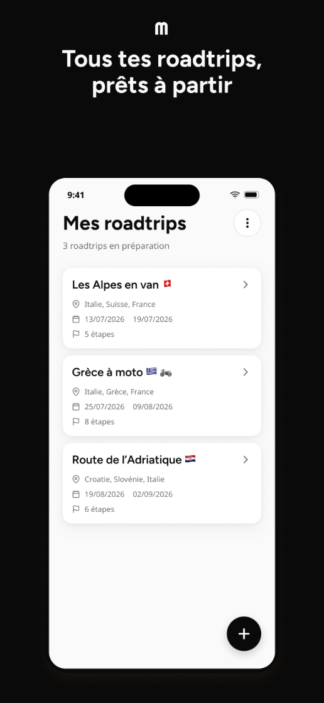
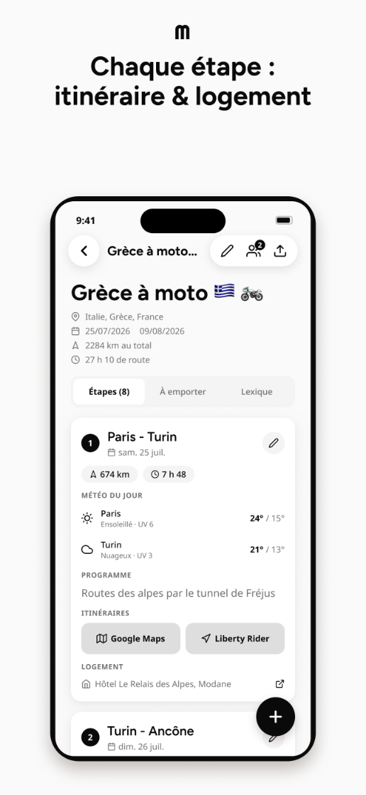
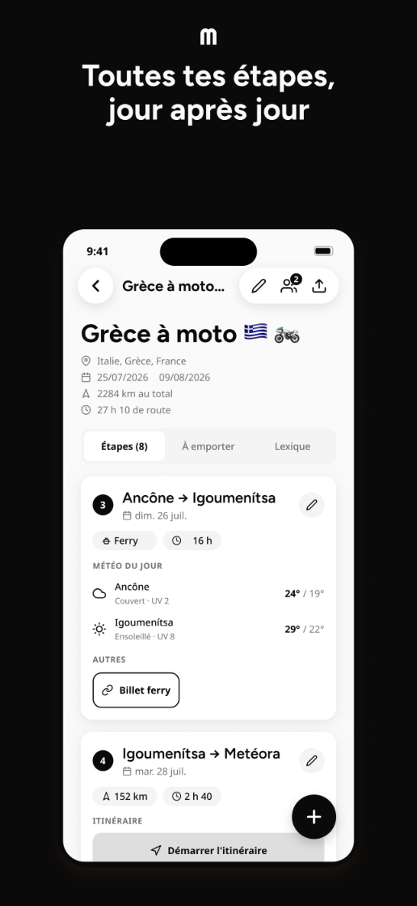
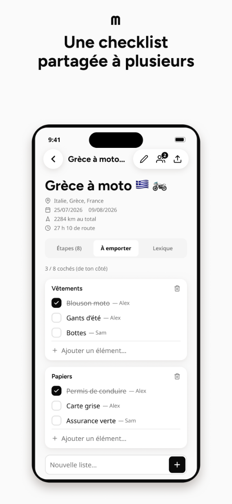
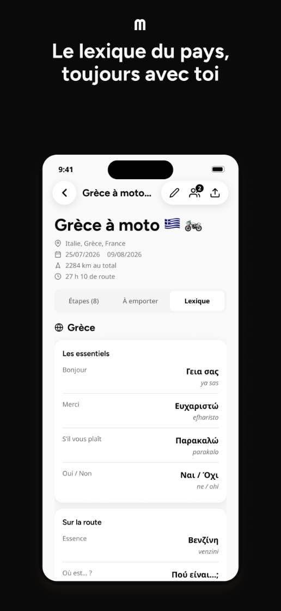
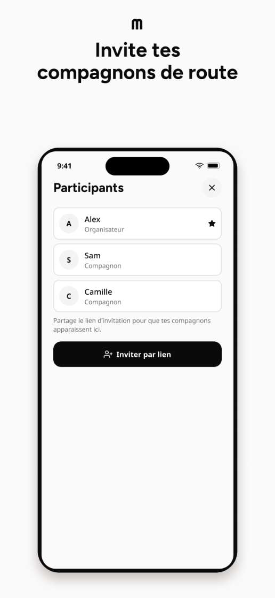

Étapes et véhicules
Chaque journée a son départ, son arrivée, son moyen de transport (moto, voiture, avion, train, ferry) et son programme. Un lien ouvre l'itinéraire dans votre app de navigation.
Une application Gabin
Maurice rassemble au même endroit les étapes, la carte, les compagnons, la checklist et les dépenses d'un voyage. L'IA conçoit l'itinéraire si vous préférez partir d'une idée plutôt que d'une feuille blanche.
Chaque journée a son départ, son arrivée, son moyen de transport (moto, voiture, avion, train, ferry) et son programme. Un lien ouvre l'itinéraire dans votre app de navigation.
Une épingle par lieu prévu et le tracé routier réel entre les étapes, cadré sur l'étape du jour quand le voyage est en cours.
Partagez un lien et un code : vos compagnons rejoignent le roadtrip et voient tout, en direct.
Listes individuelles, de groupe ou personnelles. Chacun coche pour soi, ou une coche pour tous.
Qui a payé quoi, pour qui. Les soldes et les remboursements à faire se calculent tout seuls à la fin.
Décrivez le voyage voulu ou importez un brouillon (PDF, photo, texte) : l'IA structure l'itinéraire. Ensuite, « passe par Bergen » suffit à le retravailler.
Chaque participant tient son propre carnet du même voyage, avec photos, et le partage à qui il veut.
Mots utiles, taux de change en direct, conseils pratiques pour chaque pays traversé.






Maurice est disponible sur iPhone via l'App Store. La version Android est en préparation et arrivera sur Google Play.
Maurice est éditée par Gabin. Une question, un bug, une idée : écrivez-nous.